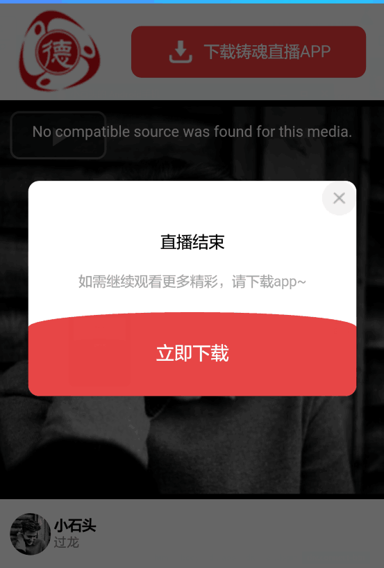

弹框
效果展示
效果１

效果２
使用介绍
组件功能，依赖等说明： 阴影弹框组件 1.vue2 2.px2rem sass函数依赖，用于手机端rem（不需要直接删除，改成px） px2rem在这里有介绍 使用： 一. Attributes show {Boolean} 默认false, 显示组件
title {String} 标题，（为空时slot分发）
icon {}
lineStyle {Object} 标题下方的线styled对象 title使用slot分发是无线，默认有线（可选惨，lineH线高, color颜色），不要线调用组件时 :lineStyle="{lineH: '0px'}"
width {String} 展示框的宽度
二.Events
closeToast 关闭弹框事件 父组件 必须v-on监听，不用$on （详见vue官网，自定义事件）
三.slot
1. title
2. icon 说明：再无title分发时有效
3. container和未命名slot。
四. 组件中存在问题
1.事件传递时向父组件传递参数。父组件监听事件时，本身处理函数也需要传参数，如：将for循环中的数据作为参数传递，这种情况下组件传递到父组件的参数不能获取
效果事例代码
<toast
:show="dialogShow"
title=""
:lineStyle="{lineH: '0'}"
:toastShowStyle="{width: '85%', borderRadius: '10px'}"
@closeToast="closeToast">
<img slot="icon" @click="closeToast" src="../../assets/icon/close.png">
<div class="con">
<h1>直播结束</h1>
<p>如需继续观看更多精彩，请下载app~</p>
<div class="toast-download">
<div class="p-1"></div>
<div class="p-2" @click="downloadApp">
立即下载
</div>
</div>
</div>
</toast>